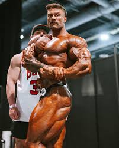
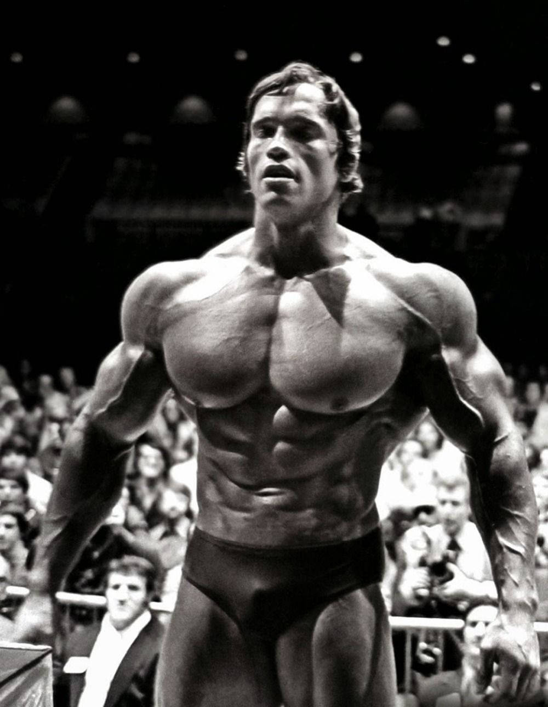

I fattori e meccanismi dell’ipertrofia muscolare: come avviene e cosa la provoca?
L’ipertrofia muscolare avviene conseguentemente all’applicazione di stimoli (stress) crescenti nel tempo a carico del muscolo attraverso allenamenti con i sovraccarichi, che possono essere ottenuti con l’utilizzo di manubri, bilancieri e macchinari ma anche da esercizi a corpo libero.
Il tessuto muscolare, pertanto, si adatta all’aumentata richiesta di lavoro (principio del sovraccarico progressivo) innescando una serie di reazioni chimiche e processi volti a massimizzare la sintesi proteica.
Affinché il tutto possa essere reso possibile è imprescindibile seguire un’alimentazione consona e funzionale all’obiettivo: i processi anabolici di sintesi proteica sono resi favorevoli a determinate condizioni caloriche (surplus) e in presenza di adeguate quantità di proteine (amminoacidi) e carboidrati.
L’input primario, dunque, è dato dall’applicazione del sovraccarico progressivo nel tempo. Esso non deve intendersi esclusivamente come aumento del carico esterno spostato ma principalmente come incremento e miglioramento dei parametri allenanti e più in generale della performance. Ad esempio, se oggi sei in grado di eseguire distensioni in panca piana con 80kg x 8 ripetizioni x 3 serie, dovrai nel tempo riuscire a completare uno schema di 80kg x 12 ripetizioni x 3 serie, e poi gradualmente 85kg x 8 x 3 e così via. Oppure, puntare a completare la stessa quantità di lavoro ma minor tempo riducendo i recuperi tra le serie. Anche il miglioramento della forma e tecnica esecutiva contribuisce in tal senso: ad esempio, eseguire 80kg x 10 ripetizioni nelle distensioni in panca piana in modo impeccabile e senza compensi, rimbalzi o ripetizioni tutte diverse, si traduce in più ipertrofia muscolare rispetto a 90kg x 10 eseguiti in tutt’altro modo.
La scienza ha identificato tre possibili meccanismi d’azione implicati nello stimolare e aumentare l’ipertrofia muscolare:
- Tensione meccanica
- Stress metabolico
- Danno cellulare
Tensione meccanica
È altamente probabile che la tensione meccanica sia il meccanismo più importante e determinante ai fini ipertrofici: il muscolo scheletrico può rilevare unicamente l’entità (intensità) e la durata temporale della contrazione muscolare (tempo sotto tensione).
Il carico meccanico a cui è sottoposto viene rilevato mediante appositi recettori specifici (meccanocettori), dai quali parte la conversione dei segnali (meccanotrasduzione) in una cascata di eventi che porta all’accumulo delle proteine muscolari (risposta adattiva).
Durante l’allenamento con i pesi, le fibre muscolari sperimentano tensione meccanica quando:
- Subiscono forze di allungamento (fase eccentrica o negativa)
- Attraverso l’accorciamento, contrastano un’altra “forza” che agisce nella direzione contraria a quella esercitata dal muscolo (fase concentrica o positiva).
Il grado di tensione meccanica subito dalle fibre muscolari è tanto più elevato quanto più si accorciano lentamente. La velocità non è deliberatamente scelta ma imposta dal carico esterno spostato oppure dall’alto grado di fatica raggiunto - ossia ciò che puoi osservare quando sposti carichi pesanti oppure sei in prossimità del cedimento muscolare.
Stress metabolico
Con stress metabolico si intende l’accumulo di metaboliti nelle fibre muscolari quali lattato, ioni d’idrogeno, fosfati inorganici. È caratteristico di allenamenti con:
- Un numero moderato e/o alto di ripetizioni,
- Tempi di recupero molto ristretti,
- Limitazione del flusso sanguigno e/o mantenimento della tensione costante
Possono essere inclusi anche altri elementi come la forte produzione di miochine, radicali liberi e il rigonfiamento cellulare che possono, dunque, amplificare gli effetti.
Non è chiaro allo stato attuale della ricerca se lo stress metabolico e i suoi effetti siano additivi o ridondanti rispetto a quelli derivanti dal solo stress meccanico. Entrambi agiscono contemporaneamente in condizioni di forte accumulo di metaboliti e ischemia transitoria, in quanto la fatica cumulativa espone e predispone le fibre muscolari alla generazione di elevati gradi di tensione meccanica, anche grazie all’aumentato reclutamento muscolare. Pertanto, può essere soltanto ipotizzato che il suo effetto sia coadiuvante lo stress meccanico.
Danno cellulare
Con danno cellulare si intende l’insieme dei danni causati alle fibre muscolari, alle miofibrille, al citoscheletro, al sarcolemma, alla lamina basale e alla matrice extracellulare che si verificano in seguito all’allenamento.
La risposta infiammatoria e l’attivazione delle cellule satelliti, che sono coinvolte nei processi di riparazione e rigenerazione, potrebbero rappresentare pertanto i processi necessari per portare ad ipertrofia muscolare.
Negli ultimi anni questo meccanismo è stato fortemente rimesso in discussione e il suo valore ridimensionato. La ricerca spasmodica di danno muscolare è uno dei capi saldi del bodybuilding vecchia scuola (“no pain, no gain”) ma in realtà è stato dimostrato che la cascata di eventi che provoca la ristrutturazione e il rimodellamento muscolare possono avvenire indipendentemente da qualsiasi danno apprezzabile ai muscoli scheletrici.
Una quantità moderata di danno muscolare sembra essere positiva mentre un eccesso può addirittura essere controproducente e contrastare l’ipertrofia.
Quanto ci mettono i muscoli a crescere
Fisiologicamente la sintesi di nuovo tessuto contrattile richiede tempo (mesi e anni), soprattutto nel caso di soggetti che non fanno utilizzo di farmaci anabolizzanti. Casi di rapido aumento di decine di chili esistono, anche se sono rari. Esempi sono condizioni di partenza caratterizzate da forte denutrizione oppure soggetti che avevano già acquisito in passato una data quantità di massa muscolare poi persa in seguito ad un lungo stop.

Nelle prime settimane/mesi il principiante non beneficia da subito di consistenti aumenti di massa muscolare ma più verosimilmente di rapidi aumenti di forza e di adattamenti di natura nervosa, funzionali ad una miglior gestione del corpo e ad una maggior efficienza nel reclutamento delle proprie fibre muscolari.
Passata questa fase, se ti alleni e alimenti correttamente, i primi 4-5 anni saranno i più proficui in termini di quantità di massa muscolare acquisita. Successivamente a questi, è possibile continuare a sintetizzare nuovo tessuto muscolare ma sempre più lentamente man mano che la finestra di adattamento determinata dal potenziale genetico si riduce.
Se però ad esempio, come spesso capita, non si fanno le cose correttamente sin da subito potrebbero passare anche 10 anni ed essere ancora principianti. Da questo punto di vista tanto più sei allenabile e tanto maggiore è il potenziale grado di miglioramento non ancora espresso.
Seppur sia difficile e azzardato dare tempistiche di crescita muscolare in quanto strettamente soggettive e principalmente dipendenti da età, sesso e genetica (quantità di fibre bianche e mionuclei, capacità di espressione della forza), diversi autori hanno stimato medie approssimative di guadagno di circa 10 kg nel primo anno fino ad una riduzione progressiva del tasso di crescita a 1 kg di massa muscolare al quarto anno (rimangono comunque valori da prendere con le pinze).
i migliori esercizzi per lo sviluppo dell'ipertrofia sono:
- distensioni in panca piana e in panca inclinata
- dip alle parallele
- distensioni sopra la testa (lento avanti)
- squat
- pressa per le cosce
- squat
- hip-thrust
- affondi
- varie forme di stacchi
- Pull-up
- houlder press